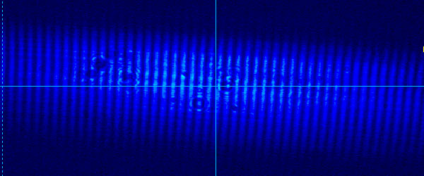

回折-02
二重スリットの回折-三角関数編
おのおのの光波を関数で表すと，
\(\Large u_1 =A \sin \left[ 2 \pi \left( \frac{ t }{ T } \color{red}{-} \frac{r_{AP}}{\lambda} \right) \right] \)
\(\Large u_2 =A \sin \left[ 2 \pi \left( \frac{ t }{ T } \color{red}{-} \frac{r_{BP}}{\lambda} \right) \right] \)
となります．ここで，
t ： 時間
T ： 周期
A ： 振幅
です．
光路差は，
\(\Large r_{AP} - r_{BP} = d \sin \theta \)
となりますが，近似3，を使って，
\(\Large r_{AP} - r_{BP} \simeq d \tan \theta \)
\(\Large \hspace{ 65pt } = \frac{d x}{L} \)
となります．従って，
\(\Large u_1 =A \sin \left[ 2 \pi \left( \frac{ t }{ T } \color{red}{-} \frac{r_{AP}}{\lambda} \right) \right] \)
\(\Large u_2 =A \sin \left[ 2 \pi \left( \frac{ t }{ T } \color{red}{-} \frac{r_{AP +\frac{d x}{L} }}{\lambda} \right) \right] \)
となります．ここで，
\(\Large \alpha = 2 \pi \left( \frac{ t }{ T } \color{red}{-} \frac{r_{AP}}{\lambda} \right) \)
\(\Large \beta = \color{red}{-} 2 \pi \left( \frac{d x}{\lambda L} \right) \)
とすると，
\(\Large u_1 =A \sin \alpha \)
\(\Large u_2 =A \sin \left( \alpha + \beta \right) \)
と簡単に記述することができます．従って，
\(\Large u_1 + u_2 =A \sin \alpha + A \sin \left( \alpha + \beta \right) \)
となります．
ここで，三角関数の公式，
\(\Large \sin x + \sin y = 2 \sin \frac{x+y}{2} \cos \frac{x-y}{2} \)
を用いると，
\(\Large u_1 + u_2 =A \sin \left( \alpha + \beta \right) \)
\(\Large \hspace{ 30pt } = 2 A \left[ \sin \frac{2 \alpha + \beta}{2} \cos \frac{ \beta}{2} \right] \)
\(\Large \hspace{ 30pt } = 2 A \left[ \sin 2 \pi \left( \frac{ t }{ T } \color{red}{-} \frac{r_{AP} + \frac{d x}{2 L}}{\lambda} \right) \cos \left( \color{red}{-} \frac{ \pi d}{\lambda L} \right) x \right] \)
となります．
ここで，最初の"sin"の中身を見ると，時間，t，を含みますので，時間とともに振動し，-1～１の間の値をとりますので振動項となります．
従って，振幅は次の"cos"のところとなります．
ここで，振幅の絶対値ではなく，相対変化を見たいので，最初の，2A，は考えなくていいですね．
強度は振幅の二乗になるので，強度Iは（マイナスは除去可能なので），
\(\Large I \simeq \left[ \cos \left( \frac{ \pi d}{\lambda L} x \right) \right]^2 \)
となります．ここで三角関数の公式
\(\Large \cos^2 \theta = \frac{1}{2} \left( cos 2 \theta +1 \right) \)
を使って，
\(\Large I \simeq \frac{1}{2} \left[ \cos \left( \frac{ 2 \pi d}{\lambda L} x \right) +1 \right] \)
となります．ここで，波数，
\(\Large k = \frac{2 \pi}{\lambda} \)
を使って，
\(\Large I \simeq \left[ \cos \left( \frac{ k d x }{ L} \right) +1 \right] \)
となります．
つまり，cos関数で，0～1の値の変化となります．
実際の回折像がこちらです．

これは，
d ： 0.2465 mm
L ： 49.6 mm
x ： 0.1288 mm
という結果です．若干誤差が大きいですが．．．
次に，三つのスリットから発せられる回折像について，考えていきましょう．